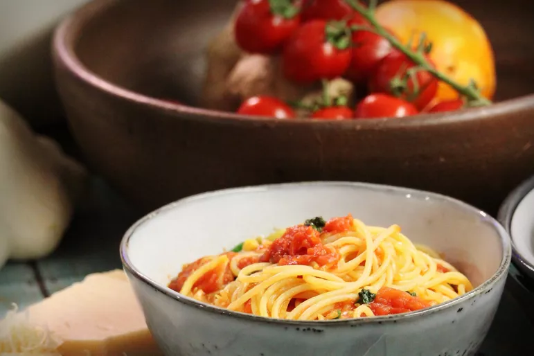

Pasta Recipes

Description
Pasta with Fresh Tomato Sauce
Ingredients
- 1 (16 ounce) package dry penne or preferred pasta
- 8 roma (plum) tomatoes, diced
- ½ cup Italian dressing, or to taste
- ¼ cup finely chopped fresh basil
- ¼ cup diced red onion
- ¼ cup grated Parmesan cheese
Steps
-
Bring a large pot of lightly salted water to a boil; add pasta and cook
until al dente, about 8 to 10 minutes. Drain.
-
Transfer cooked pasta into a large bowl; add tomatoes, Italian dressing,
basil, red onion, and Parmesan cheese. Toss well to coat; serve.